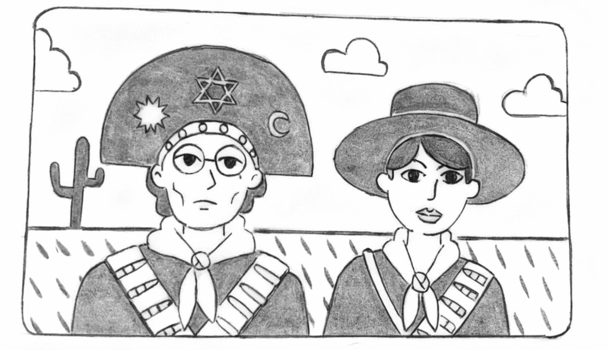

De volta ao período letivo, durante a primeira reunião pedagógica, Rita preferiu não comentar o episódio envolvendo seu aluno Rodésio, embora a notícia já tivesse se espalhado pelos corredores da escola.
A diretora Norberta conduziu a reunião, fazendo um breve retrospecto do período anterior e apontando algumas determinações e metas estabelecidas pela Secretaria para o bimestre que se iniciava:
— Pessoal, há uma atividade mais urgente que precisamos alinhar em nosso cronograma — informou a diretora. — Trata-se da "Semana Cultural". Pela resolução, ela deverá acontecer na segunda quinzena de agosto, ou seja, daqui a exatamente três semanas. Portanto, seria prudente aproveitarmos esta reunião para escolher as temáticas e sorteá-las entre nós.
Rita ficou com o tema “A cultura nordestina”.
— Bom dia, minhas lindezas! Sentiram saudades da tia Rita? Espero que tenham aproveitado as férias para descansar e curtir a família. Pois, a partir de hoje, quero ver todos vocês mandando ver nos estudos!
— Professora Rita, a gente quer que a senhora conte sobre o afogamento do Rodésio — instigou a aluna Amanda, incentivada pelos colegas.
— Turma, prestem bastante atenção no que eu vou dizer. Esse é um assunto no qual não devemos nos envolver. Cabe apenas ao Rodésio decidir se deve ou não compartilhar com vocês a sua experiência. O importante é que ele está aqui com a gente, pronto para enfrentar o bimestre.
— Conta pra gente, Rodésio, quanto tempo você ficou debaixo d’água? — provocou um dos alunos, em tom irônico.
Rodésio não disse uma só palavra. Preferiu permanecer de cabeça baixa, concentrado nos rabiscos que fazia em seu caderno.
— Agora chega, pessoal! Não quero mais ouvir ninguém comentando sobre esse assunto. Estamos entendidos? — repreendeu Rita. — Vamos nos concentrar nas atividades para a "Semana Cultural". A turma de vocês ficou com o tema "A cultura nordestina". Quero que sejam criativos, combinado?
— Professora, vai ter prêmio para a melhor turma?
— Sim. A turma que apresentar a melhor exposição vai ganhar um city tour com direito a lanche.
— Êba! — comemorou a turma.
— A dica que vou dar a vocês é a seguinte — emendou Rita —: acessem o Google e pesquisem sobre cultura brasileira, especificamente sobre as culturas das regiões Norte e Nordeste do Brasil.
p. 20Como de costume, a turma se dividiu em grupos de trabalho. E, conforme orientação da diretora, as três aulas seguintes da professora Rita deveriam ficar inteiramente à disposição dos grupos para a produção do material da Semana Cultural.
A turma toda estava muito entusiasmada, e os grupos investiram na criatividade. Painéis com amostras fotográficas da cultura nordestina foram combinados com manequins improvisados.
Basicamente, os painéis fotográficos — repletos de recortes de revistas, imagens escaneadas e desenhos feitos à mão livre — pareciam explorar um tema único: o cangaço. Eram dezenas de representações de Lampião, Maria Bonita e seu bando.

Um segundo grupo abordou a pintura intitulada Retirantes, do artista brasileiro Cândido Portinari, na qual o autor procurou expressar toda a angústia, o desespero e o sofrimento de uma família de retirantes nordestinos diante da aridez do sertão.
Já outro grupo utilizou alguns manequins de lojas de roupas, vestindo-os com peças feitas de papel crepom e camurça, também explorando o tema do cangaço.
— Está ficando lindo! — comentou a diretora ao entrar na sala.
Contudo, um detalhe chamou a atenção da diretora Norberta: junto aos demais painéis, havia um cartaz cujo desenho, feito com giz de cera, retratava um estranho peixe de aparência assustadora.
Ao notar o incômodo que tal desenho causara em Norberta, Rita interveio imediatamente, chamando a diretora para um canto:
— Professora Norberta, esse desenho foi feito pelo aluno Rodésio... Aquele que sofreu o afogamento — sussurrou.
— Ah, sim! Coitadinho... Isso mostra o quanto ainda está traumatizado, não é mesmo? A melhor coisa que podemos fazer é parabenizá-lo e incentivá-lo. Ele precisa recuperar a autoestima — concluiu a diretora.
Sexta-feira é o ápice da Semana Cultural. Os portões da escola se escancaram para receber a comunidade local. Familiares visitam as exposições de seus filhos, trazem lanches e se confraternizam.
p. 21A sala onde a turma da professora Rita montou a exposição recebeu um fluxo intenso de visitantes. Foi até preciso improvisar, buscando uma das mesas da cantina da escola para acomodar a enorme quantidade de comes e bebes trazidos pelos pais e mães dos discentes.
Ao lado dos variados tipos de refrigerantes industrializados, diferentes receitas de quitandas caseiras enfeitavam a mesa: cuscuz, tapiocas, cocadas, canjica, bolo de milho, arroz-doce, bolo de macaxeira e até paçoca de carne-seca. As mães, orgulhosas, comentavam sobre seus temperos:
— Égua! Que mesa linda! — comentou uma mãe.
— Fiquei brocado só de vê — concordou o marido, admirado.
— Oxente, quem fez esse bolo de macaxeira?
— Eu, mais minha tia Nenê
— E foi? Tá igualzinho ao de mãinha. Porreta!
Em torno daquela mesa, as distantes e rígidas representações do cangaço, bem como a melancólica paisagem imaginada por Portinari, se apequenaram diante da magnitude do teatro espontaneamente armado e encenado por aqueles pais e mães. Verdadeiros artistas de uma peça nordestina, cujo pano de fundo era o dinâmico processo migratório brasileiro.
Ali, naquele fluido e improvisado momento, era possível ver, ouvir, sentir e degustar elementos da cultura nordestina — flagrada em sua melhor performance: no âmbito de processos interculturais.
O curioso é que a maioria dos alunos e alunas envolvidos na montagem da exposição — sem excluir algumas professoras — era formada por pessoas de origem nordestina, seja por terem nascido em alguma região do Nordeste, seja por serem filhos, filhas ou netos de migrantes nordestinos.
Mas por que, então, mesmo pertencendo a famílias de origem nordestina, esses alunos e alunas não se sentiram encorajados a trazer para a exposição aspectos da cultura nordestina cotidianamente vividos por eles em seus próprios lares, preferindo, em vez disso, reproduzir representações alegóricas de um Nordeste cinematográfico? Foi preciso que seus pais, espontânea e despretensiosamente, reproduzissem uma “nordestinagem” atual e dinâmica.
p. 23Igualmente, por que aquela escola, mesmo ciente da presença massiva da cultura nordestina em sua comunidade, não conseguia explorar os aspectos dessa cultura no sentido de buscar suas interfaces com os conteúdos programáticos previstos em seu currículo, especialmente com a área de Ciências da Natureza?